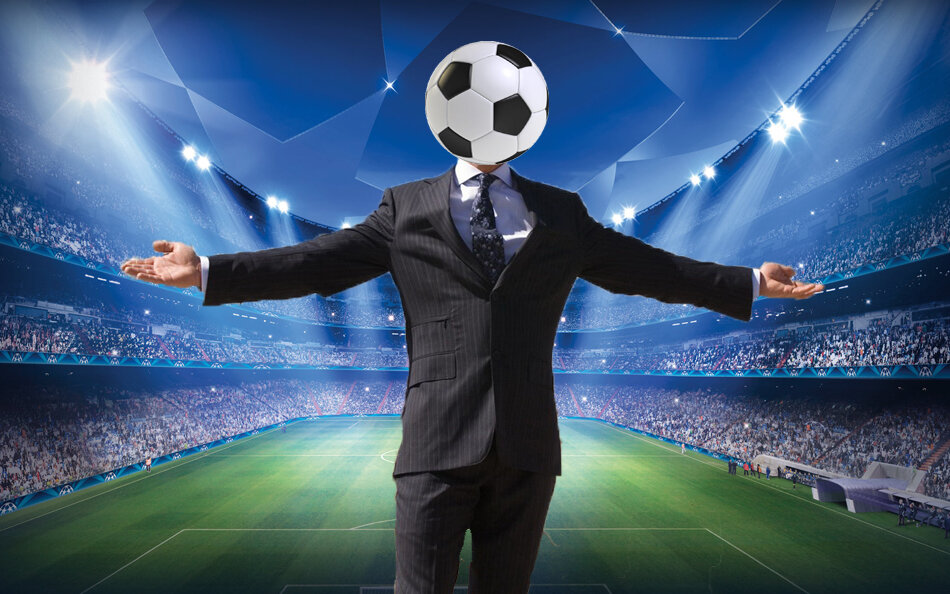
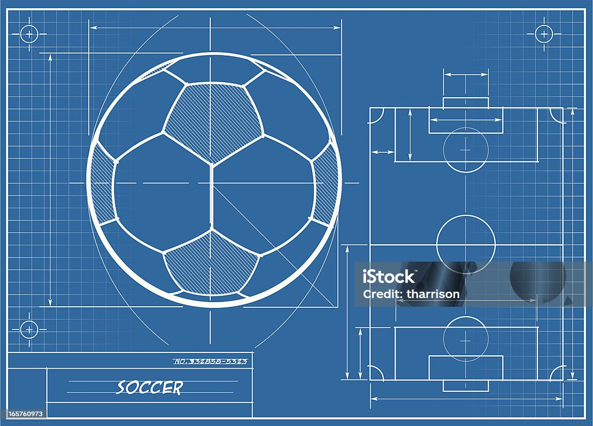
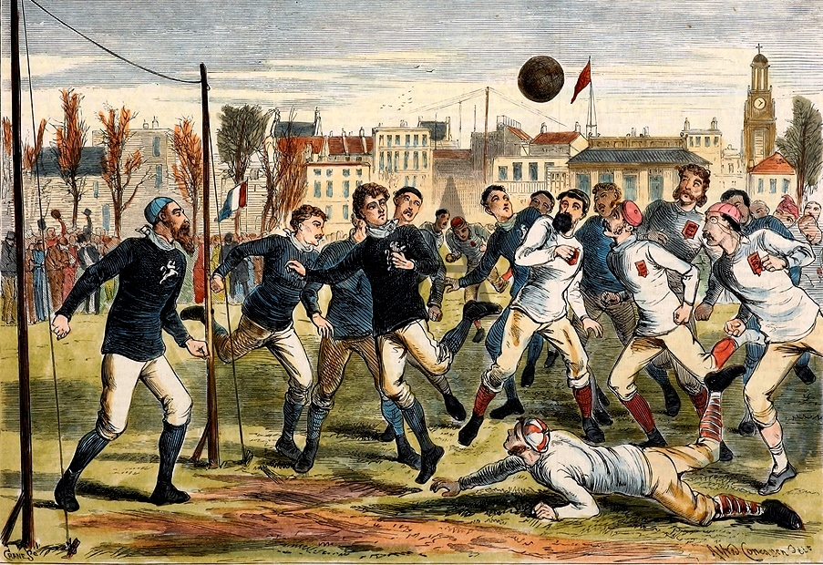
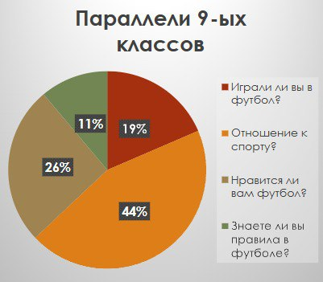

Выполнил ученик 9Г класса: Пояснюк Иван Дмитриевич Руководитель
проекта: Везирова Ольга Андреевна Санкт-Петербург 2025г.



Анкетирование

Футбол – один из самых популярных видов спорта
Выполнил ученик 9Г класса: Пояснюк Иван Дмитриевич Руководитель
проекта: Везирова Ольга Андреевна Санкт-Петербург 2025г.
цель работы
Целью данной проектной работы является создание презентации по теме “Футбол – один самых популярных видов спорта” для учащихся 7-11 классов.
история возникновения фубола в России
В России игра в футбол появился в 1880 году. Он был перенят от английских моряков и рабочих иностранцев, которые в то время работали на российских заводах. Первые Российские клубы зародились в Одессе, Риге, Николаеве и Санкт-Петербурге, а спустя пару лет и в Москве.
Интересные факты про возникновения футбола в России
В России есть несколько известных футбольных стадионов, включая «Лужники» в Москве, который является крупнейшим стадионом страны и был хозяином финала Чемпионата мира 2018 года.
Почему футбол является одним из самых популярных видов спорта?
Популярность футбола трудно игнорировать. Футбол является самым популярным видом спорта в мире, его смотрят 40% людей, интересующихся спортом.